gives an upper bound to the ground energy whose error is second order in the error of the wave function.
gives an upper bound to the ground energy whose error is second order in the error of the wave function.
Theorem
Expand
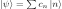
in energy eigenkets: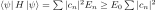
. Equality iff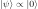
. If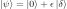
, the energy error is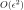
: rough wave functions give good energies.Method
- Choose a family
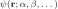
with the right symmetry and boundary behaviour. - Compute
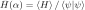
. - Minimise:
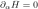
. The minimum is the best estimate in the family.
Linear combinations
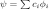
give the generalised eigenproblem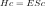
(Rayleigh–Ritz), the basis of quantum chemistry and of finite elements (Ritz 1909).Worked example: helium
Trial
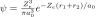
with effective charge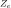
. Kinetic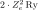
, nuclear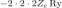
, repulsion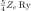
(Ry = 13.6 eV):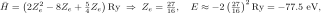
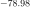
eV (2% error). Each electron screens the nucleus from the other.Engineering applications
Density-functional theory (variational in the electron density) designs semiconductors and catalysts; finite-element solvers for waveguide modes (photonic modes) minimise a Rayleigh quotient; hydrogen-molecule bonding (LCAO).
Pitfall
The method bounds only the lowest energy of a given symmetry; excited states need trial functions orthogonal to the lower ones.